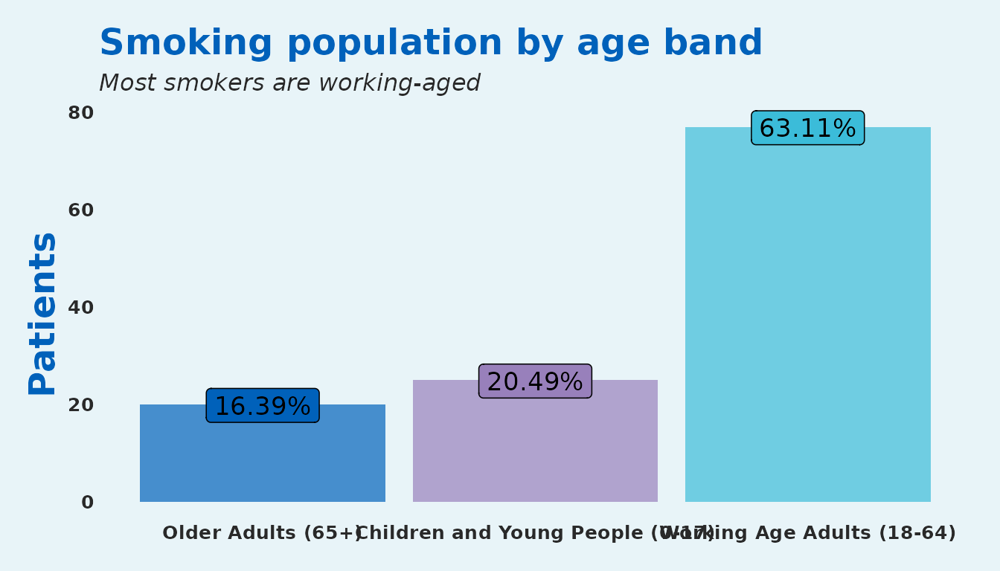
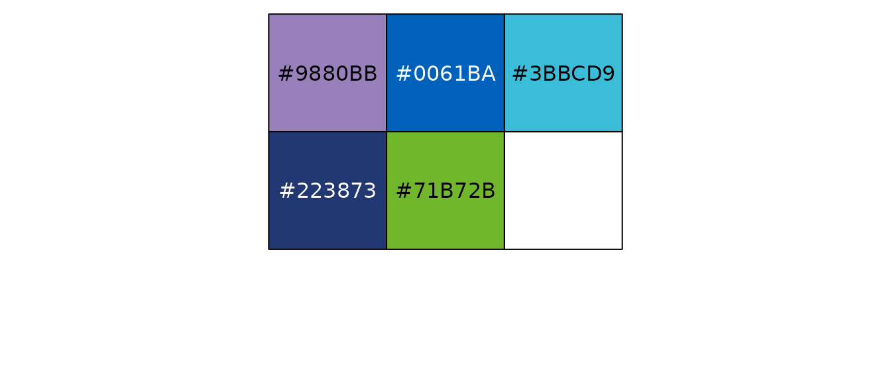
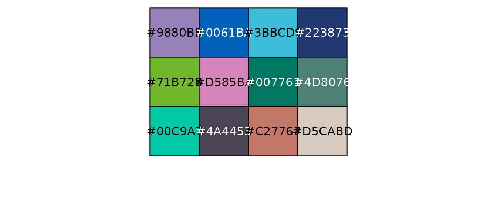
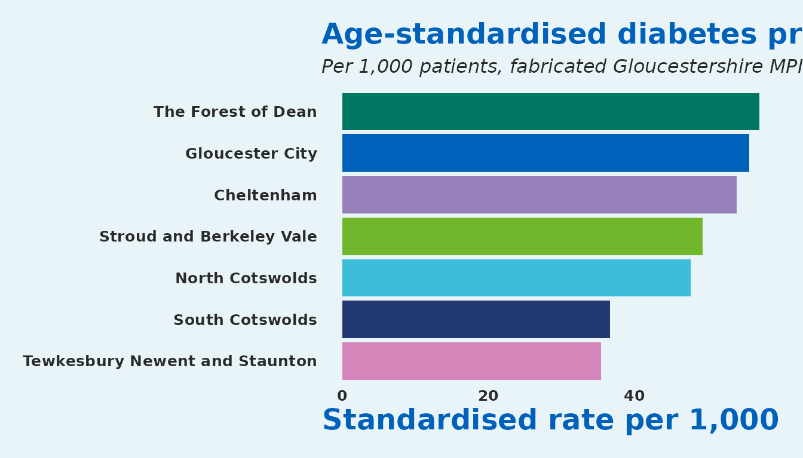

This vignette is a single-page tour of SangerTools: every bundled dataset, every exported function, and a short end-to-end mini-case that chains them together. If you have just installed the package and want to confirm everything works, run this notebook top to bottom.
Bundled datasets
SangerTools ships three fabricated population health datasets so every example in the package is reproducible without external files.
PopHealthData
A small (1,000 rows) NHS-style population dataset with one row per patient.
data("PopHealthData", package = "SangerTools")
glimpse(PopHealthData)
#> Rows: 1,000
#> Columns: 8
#> $ Sex <chr> "Male", "Female", "Male", "Male", "Male", "Female",…
#> $ Smoker <dbl> 0, 0, 0, 0, 0, 0, 1, 0, 0, 0, 0, 0, 0, 0, 0, 0, 0, …
#> $ Diabetes <dbl> 0, 0, 0, 0, 1, 1, 0, 0, 0, 0, 0, 1, 0, 0, 0, 0, 0, …
#> $ AgeBand <chr> "Children and Young People (0-17)", "Working Age Ad…
#> $ IMD_Decile <dbl> 9, 5, 3, 3, 4, 6, 3, 7, 6, 4, 9, 2, 1, 9, 2, 3, 4, …
#> $ Ethnicity <chr> "White", "White", "White", "White", "White", "White…
#> $ Locality <chr> "Cheltenham", "Gloucester City", "Cheltenham", "Glo…
#> $ PrimaryCareNetwork <chr> "Cheltenham Central", "Tewkesbury, Newent and Staun…
head(PopHealthData)
#> # A tibble: 6 × 8
#> Sex Smoker Diabetes AgeBand IMD_Decile Ethnicity Locality PrimaryCareNetwork
#> <chr> <dbl> <dbl> <chr> <dbl> <chr> <chr> <chr>
#> 1 Male 0 0 Childr… 9 White Chelten… Cheltenham Central
#> 2 Fema… 0 0 Workin… 5 White Glouces… Tewkesbury, Newen…
#> 3 Male 0 0 Workin… 3 White Chelten… Severn Health
#> 4 Male 0 0 Workin… 3 White Glouces… Cheltenham Central
#> 5 Male 0 1 Older … 4 White Chelten… Cheltenham Periph…
#> 6 Fema… 0 1 Workin… 6 White North C… Cheltenham Central
master_patient_index
A larger (10,000 rows) fabricated Master Patient Index inspired by
Gloucestershire’s population. Includes a numeric Age column
suitable for banding.
data("master_patient_index", package = "SangerTools")
glimpse(master_patient_index)
#> Rows: 10,000
#> Columns: 10
#> $ Sex <chr> "Female", "Female", "Male", "Female", "Female", "Fe…
#> $ Smoker <dbl> 1, 0, 0, 0, 0, 0, 0, 0, 0, 0, 0, 0, 1, 0, 0, 0, 1, …
#> $ Diabetes <dbl> 0, 0, 0, 0, 0, 0, 0, 0, 0, 0, 0, 0, 0, 0, 0, 0, 1, …
#> $ Dementia <dbl> 0, 0, 0, 0, 0, 0, 0, 0, 0, 0, 0, 0, 0, 0, 0, 0, 0, …
#> $ Obesity <dbl> 0, 0, 0, 0, 0, 0, 0, 0, 0, 0, 1, 0, 0, 1, 0, 0, 0, …
#> $ Age <dbl> 17, 31, 34, 62, 37, 57, 25, 14, 30, 64, 45, 70, 11,…
#> $ IMD_Decile <dbl> 7, 1, 3, 9, 4, 9, 2, 3, 3, 1, 4, 10, 3, 4, 6, 3, 4,…
#> $ Ethnicity <chr> "White", "White", "White", "White", "White", "White…
#> $ Locality <chr> "Gloucester City", "Stroud and Berkeley Vale", "Che…
#> $ PrimaryCareNetwork <chr> "Tewkesbury, Newent and Staunton and West Cheltenha…
uk_pop_standard
A 5-year age band weighting taken from ONS 2018 mid-year population estimates, ready to use as a standard population for direct standardisation.
data("uk_pop_standard", package = "SangerTools")
uk_pop_standard
#> # A tibble: 21 × 2
#> UK_Population Ageband
#> <dbl> <fct>
#> 1 3914000 0-4
#> 2 4139000 5-9
#> 3 3859000 10-14
#> 4 3669000 15-19
#> 5 4185000 20-24
#> 6 4527000 25-29
#> 7 4463000 30-34
#> 8 4372000 35-39
#> 9 3993000 40-44
#> 10 4507000 45-49
#> # ℹ 11 more rowsFunction gallery
Wrangling
age_bandizer() — fixed 5-year bands
mpi_banded <- age_bandizer(master_patient_index, Age)
mpi_banded %>%
count(Ageband) %>%
head()
#> # A tibble: 6 × 2
#> Ageband n
#> <fct> <int>
#> 1 0-4 335
#> 2 5-9 564
#> 3 10-14 597
#> 4 15-19 550
#> 5 20-24 509
#> 6 25-29 596
age_bandizer_2() — configurable band width
ages <- data.frame(Age = sample(0:100, 30, replace = TRUE))
age_bandizer_2(ages, Age_col = "Age", Age_band_size = 10) %>% head()
#> Age Ageband
#> 1 44 40-49
#> 2 22 20-29
#> 3 75 70-79
#> 4 62 60-69
#> 5 100 100+
#> 6 46 40-49
cohort_processing() and
split_and_save()
Both split a data frame by an organisational identifier and write one CSV per group. They are file-system side-effects, so we show the signatures here and run them in a temp directory below.
cohort_processing(
df = PopHealthData,
Split_by = "Locality",
path = "outputs/"
)
split_and_save(
df = PopHealthData,
Split_by = "Locality",
path = "outputs/",
prefix = "Locality_"
)A quick live demo that cleans up after itself:
tmp <- file.path(tempdir(), "sanger-demo")
dir.create(tmp, showWarnings = FALSE, recursive = TRUE)
split_and_save(
df = PopHealthData,
Split_by = "Locality",
path = paste0(tmp, "/"),
prefix = "Locality_"
)
#> $Cheltenham
#> # A tibble: 249 × 8
#> Sex Smoker Diabetes AgeBand IMD_Decile Ethnicity Locality
#> <chr> <dbl> <dbl> <chr> <dbl> <chr> <chr>
#> 1 Male 0 0 Children and Young Peop… 9 White Chelten…
#> 2 Male 0 0 Working Age Adults (18-… 3 White Chelten…
#> 3 Male 0 1 Older Adults (65+) 4 White Chelten…
#> 4 Female 1 0 Working Age Adults (18-… 3 White Chelten…
#> 5 Female 0 0 Working Age Adults (18-… 2 White Chelten…
#> 6 Male 0 0 Children and Young Peop… 3 White Chelten…
#> 7 Male 0 0 Working Age Adults (18-… 5 White Chelten…
#> 8 Male 0 0 Older Adults (65+) 6 Black or… Chelten…
#> 9 Male 0 0 Working Age Adults (18-… 1 White Chelten…
#> 10 Female 0 0 Children and Young Peop… 10 White Chelten…
#> # ℹ 239 more rows
#> # ℹ 1 more variable: PrimaryCareNetwork <chr>
#>
#> $`Gloucester City`
#> # A tibble: 272 × 8
#> Sex Smoker Diabetes AgeBand IMD_Decile Ethnicity Locality
#> <chr> <dbl> <dbl> <chr> <dbl> <chr> <chr>
#> 1 Female 0 0 Working Age Adults (18-… 5 White Glouces…
#> 2 Male 0 0 Working Age Adults (18-… 3 White Glouces…
#> 3 Male 0 1 Working Age Adults (18-… 2 White Glouces…
#> 4 Female 0 0 Working Age Adults (18-… 4 White Glouces…
#> 5 Female 0 0 Working Age Adults (18-… 9 White Glouces…
#> 6 Female 0 0 Older Adults (65+) 4 White Glouces…
#> 7 Male 0 1 Children and Young Peop… 4 White Glouces…
#> 8 Male 0 0 Children and Young Peop… 1 White Glouces…
#> 9 Male 0 0 Older Adults (65+) 7 White Glouces…
#> 10 Other 0 0 Older Adults (65+) 2 White Glouces…
#> # ℹ 262 more rows
#> # ℹ 1 more variable: PrimaryCareNetwork <chr>
#>
#> $`North Cotswolds`
#> # A tibble: 49 × 8
#> Sex Smoker Diabetes AgeBand IMD_Decile Ethnicity Locality
#> <chr> <dbl> <dbl> <chr> <dbl> <chr> <chr>
#> 1 Female 0 1 Working Age Adults (18-… 6 White North C…
#> 2 Male 0 0 Working Age Adults (18-… 1 White North C…
#> 3 Male 1 0 Working Age Adults (18-… 4 White North C…
#> 4 Female 0 0 Working Age Adults (18-… 6 White North C…
#> 5 Male 0 0 Children and Young Peop… 4 White North C…
#> 6 Female 0 0 Working Age Adults (18-… 5 White North C…
#> 7 Female 0 0 Working Age Adults (18-… 5 White North C…
#> 8 Male 0 0 Working Age Adults (18-… 1 Asian or… North C…
#> 9 Male 0 0 Working Age Adults (18-… 10 White North C…
#> 10 Female 0 0 Working Age Adults (18-… 3 Black or… North C…
#> # ℹ 39 more rows
#> # ℹ 1 more variable: PrimaryCareNetwork <chr>
#>
#> $`South Cotswolds`
#> # A tibble: 98 × 8
#> Sex Smoker Diabetes AgeBand IMD_Decile Ethnicity Locality
#> <chr> <dbl> <dbl> <chr> <dbl> <chr> <chr>
#> 1 Female 0 0 Older Adults (65+) 4 Black or… South C…
#> 2 Male 0 0 Working Age Adults (18-… 1 White South C…
#> 3 Male 0 0 Older Adults (65+) 5 White South C…
#> 4 Male 0 0 Working Age Adults (18-… 8 White South C…
#> 5 Female 1 0 Children and Young Peop… 10 White South C…
#> 6 Male 0 0 Working Age Adults (18-… 5 White South C…
#> 7 Male 0 0 Older Adults (65+) 10 White South C…
#> 8 Male 0 0 Working Age Adults (18-… 3 White South C…
#> 9 Male 0 0 Working Age Adults (18-… 2 White South C…
#> 10 Female 0 0 Working Age Adults (18-… 4 White South C…
#> # ℹ 88 more rows
#> # ℹ 1 more variable: PrimaryCareNetwork <chr>
#>
#> $`Stroud and Berkeley Vale`
#> # A tibble: 187 × 8
#> Sex Smoker Diabetes AgeBand IMD_Decile Ethnicity Locality
#> <chr> <dbl> <dbl> <chr> <dbl> <chr> <chr>
#> 1 Female 0 0 Working Age Adults (18-… 9 White Stroud …
#> 2 Male 0 0 Working Age Adults (18-… 9 White Stroud …
#> 3 Male 0 0 Children and Young Peop… 3 Asian or… Stroud …
#> 4 Female 0 0 Working Age Adults (18-… 2 White Stroud …
#> 5 Female 0 0 Working Age Adults (18-… 2 White Stroud …
#> 6 Female 0 0 Older Adults (65+) 4 White Stroud …
#> 7 Female 0 0 Working Age Adults (18-… 3 White Stroud …
#> 8 Male 0 0 Working Age Adults (18-… 10 White Stroud …
#> 9 Male 0 0 Older Adults (65+) 9 White Stroud …
#> 10 Male 1 0 Working Age Adults (18-… 1 White Stroud …
#> # ℹ 177 more rows
#> # ℹ 1 more variable: PrimaryCareNetwork <chr>
#>
#> $`Tewkesbury Newent and Staunton`
#> # A tibble: 64 × 8
#> Sex Smoker Diabetes AgeBand IMD_Decile Ethnicity Locality
#> <chr> <dbl> <dbl> <chr> <dbl> <chr> <chr>
#> 1 Female 0 0 Working Age Adults (18-… 5 White Tewkesb…
#> 2 Female 0 0 Children and Young Peop… 4 White Tewkesb…
#> 3 Female 0 0 Older Adults (65+) 5 White Tewkesb…
#> 4 Male 0 0 Older Adults (65+) 9 White Tewkesb…
#> 5 Female 0 0 Older Adults (65+) 6 White Tewkesb…
#> 6 Male 0 0 Working Age Adults (18-… 2 White Tewkesb…
#> 7 Female 1 0 Working Age Adults (18-… 8 White Tewkesb…
#> 8 Male 0 0 Working Age Adults (18-… 8 White Tewkesb…
#> 9 Male 1 0 Working Age Adults (18-… 2 Other Et… Tewkesb…
#> 10 Female 0 0 Older Adults (65+) 9 White Tewkesb…
#> # ℹ 54 more rows
#> # ℹ 1 more variable: PrimaryCareNetwork <chr>
#>
#> $`The Forest of Dean`
#> # A tibble: 81 × 8
#> Sex Smoker Diabetes AgeBand IMD_Decile Ethnicity Locality
#> <chr> <dbl> <dbl> <chr> <dbl> <chr> <chr>
#> 1 Male 0 0 Working Age Adults (18-… 7 White The For…
#> 2 Female 0 0 Older Adults (65+) 6 Mixed The For…
#> 3 Male 0 0 Children and Young Peop… 8 White The For…
#> 4 Female 0 0 Working Age Adults (18-… 9 White The For…
#> 5 Male 0 0 Children and Young Peop… 6 White The For…
#> 6 Female 0 0 Older Adults (65+) 2 White The For…
#> 7 Male 0 0 Working Age Adults (18-… 1 White The For…
#> 8 Male 0 0 Children and Young Peop… 5 White The For…
#> 9 Female 0 0 Older Adults (65+) 8 White The For…
#> 10 Male 0 0 Older Adults (65+) 6 White The For…
#> # ℹ 71 more rows
#> # ℹ 1 more variable: PrimaryCareNetwork <chr>
list.files(tmp, pattern = "\\.csv$")
#> [1] "Locality_Cheltenham.csv"
#> [2] "Locality_Gloucester City.csv"
#> [3] "Locality_North Cotswolds.csv"
#> [4] "Locality_South Cotswolds.csv"
#> [5] "Locality_Stroud and Berkeley Vale.csv"
#> [6] "Locality_Tewkesbury Newent and Staunton.csv"
#> [7] "Locality_The Forest of Dean.csv"
unlink(tmp, recursive = TRUE)Analytics
crude_rates()
Crude prevalence per 1,000 patients, grouped by one or more variables.
crude_rates(PopHealthData, Diabetes, Locality)
#> # A tibble: 7 × 4
#> Locality Cohort_Size Diabetes_Population Prevalence_1k
#> <chr> <int> <int> <dbl>
#> 1 Cheltenham 249 15 60.2
#> 2 Gloucester City 272 15 55.1
#> 3 South Cotswolds 98 5 51.0
#> 4 The Forest of Dean 81 4 49.4
#> 5 Tewkesbury Newent and Staunton 64 2 31.2
#> 6 Stroud and Berkeley Vale 187 5 26.7
#> 7 North Cotswolds 49 1 20.4
standardised_rates_df()
Direct age-standardised prevalence using either the dataset’s own age structure or a supplied population standard.
standardised_rates_df(
df = mpi_banded,
Split_by = Locality,
Condition = Diabetes,
Population_Standard = NULL,
Granular = FALSE,
Ageband
)
#> # A tibble: 7 × 2
#> Locality Standardised_Rate_1k
#> <chr> <dbl>
#> 1 The Forest of Dean 57.0
#> 2 Gloucester City 55.7
#> 3 Cheltenham 54.0
#> 4 Stroud and Berkeley Vale 49.3
#> 5 North Cotswolds 47.6
#> 6 South Cotswolds 36.6
#> 7 Tewkesbury Newent and Staunton 35.4Charts and theming
categorical_col_chart() + theme_sanger() +
scale_fill_sanger()
PopHealthData %>%
filter(Smoker == 1) %>%
categorical_col_chart(AgeBand) +
labs(
title = "Smoking population by age band",
subtitle = "Most smokers are working-aged",
x = NULL,
y = "Patients"
) +
scale_fill_sanger()
Palette previews

#> [1] "#9880BB" "#0061BA" "#3BBCD9" "#223873" "#71B72B"
show_extended_palette()
#> [1] "#9880BB" "#0061BA" "#3BBCD9" "#223873" "#71B72B" "#D585BA" "#007761"
#> [8] "#4D8076" "#00C9A7" "#4A4453" "#C27767" "#D5CABD"I/O
excel_clip()
Copies a data frame to the system clipboard in a tab-separated layout
that pastes cleanly into Excel. Windows only (it uses the
"clipboard" device); skipped in this vignette.
excel_clip(PopHealthData)
df_to_sql()
Writes a data frame to a Microsoft SQL Server table via ODBC. Requires a configured DSN and a Windows machine with integrated authentication; not runnable in a vignette build.
df_to_sql(
df = PopHealthData,
driver = "ODBC Driver 17 for SQL Server",
server = "your-server",
database = "your-database",
sql_table_name = "PopHealthData",
overwrite = FALSE
)
multiple_csv_reader() /
multiple_excel_reader()
Aggregate a directory of CSVs or Excel files into one tidy frame. Pointed at an empty directory below to keep the vignette hermetic.
empty <- file.path(tempdir(), "no-files")
dir.create(empty, showWarnings = FALSE)
multiple_csv_reader(paste0(empty, "/"))
#> NULL
unlink(empty, recursive = TRUE)Putting it together
A short end-to-end mini case: take the Master Patient Index, band ages, compute age-standardised diabetes prevalence by locality using the ONS UK standard population, and plot the result with the Sanger theme.
banded <- age_bandizer(master_patient_index, Age)
rates <- standardised_rates_df(
df = banded,
Split_by = Locality,
Condition = Diabetes,
Population_Standard = NULL,
Granular = FALSE,
Ageband
)
rates
#> # A tibble: 7 × 2
#> Locality Standardised_Rate_1k
#> <chr> <dbl>
#> 1 The Forest of Dean 57.0
#> 2 Gloucester City 55.7
#> 3 Cheltenham 54.0
#> 4 Stroud and Berkeley Vale 49.3
#> 5 North Cotswolds 47.6
#> 6 South Cotswolds 36.6
#> 7 Tewkesbury Newent and Staunton 35.4
ggplot(rates, aes(x = reorder(Locality, Standardised_Rate_1k),
y = Standardised_Rate_1k,
fill = Locality)) +
geom_col(show.legend = FALSE) +
coord_flip() +
labs(
title = "Age-standardised diabetes prevalence",
subtitle = "Per 1,000 patients, fabricated Gloucestershire MPI",
x = NULL,
y = "Standardised rate per 1,000"
) +
theme_sanger() +
scale_fill_sanger()